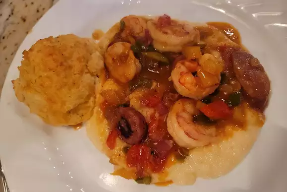

Old Charleston-Style Shrimp and Grits

Description
Shrimp and grits is a Southern dish from the Lowcountry of coastal South Carolina and Georgia. It's traditionally served at breakfast, but you can often find it on lunch or dinner menus. Nobody is quite sure when the ingredients were first served together, but the first known published recipe appeared in the 1950 edition of Charleston Receipts (the oldest Junior League cookbook still in print).
Ingredients
- 3 cups water
- 2 teaspoons salt
- 1 cup coursely ground grits
- 2 cups half-and-half
- 2 pounds uncooked shrimp, peeled and deveined
- salt to taste
- 1 pinch cayenne pepper, or to taste
- 1 medium lemon, juiced
- 1 pound andouille sausage, cut into 1/4-inch slices
- 5 slices bacon
- 1 medium green bell pepper, chopped
- 1 medium red bell pepper, chopped
- 1 medium yellow bell pepper, chopped
- 1 cup chopped onion
- 1 teaspoon minced garlic
- 1/4 cup butter
- 1/4 cup all-purpose flour
- 1 cup chicken broth
- 1 tablespoon Worcestershire sauce
- 1 cup shredded sharp Cheddar cheese
Steps
- Bring water and 2 teaspoons salt to a boil in a heavy saucepan over medium-high heat. Whisk grits into the boiling water, and then whisk in half-and-half. Reduce heat to medium-low and simmer, stirring occasionally, until grits are thickened and tender, 15 to 20 minutes. Set aside and keep warm.
- Season shrimp with salt and cayenne pepper. Add lemon juice, toss to combine, and set aside to marinate.
- Place sausage slices in a large skillet over medium-high heat. Cook, stirring occasionally, until browned, 5 to 8 minutes. Remove sausage from the skillet.
- Add bacon to the same skillet. Cook over medium-high heat until evenly browned, about 5 minutes per side. Transfer bacon to paper towels to drain, then chop or crumble when cool enough to handle. Leave bacon drippings in the skillet.
- Add bell peppers, onion, and garlic to the bacon drippings; cook and stir until onion is translucent, about 8 minutes.
- Stir cooked sausage and marinated shrimp into the skillet with the cooked vegetables. Turn off the heat and set aside.
- Melt butter in a small saucepan over medium heat. Whisk in flour, stirring to create a smooth roux. Turn heat to low and cook, stirring constantly, until mixture is golden brown in color, 8 to 10 minutes. Watch carefully, mixture burns easily.
- Pour the roux over the sausage, shrimp, and vegetables. Place the skillet over medium heat, add chicken broth, bacon, and Worcestershire sauce, and stir to combine. Cook until sauce thickens up and shrimp turn opaque and bright pink, about 8 minutes.
- Just before serving, mix Cheddar cheese into grits; stir until cheese is melted and grits are creamy and light yellow.
- Spoon grits onto plates and serve shrimp mixture over top.